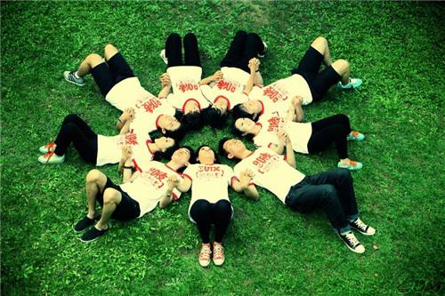

《青春》中文版
《青春》
文/塞缪尔·厄尔曼 2016-11-24
青春不是年华，而是心境；青春不是桃面、丹唇、柔膝，而是深沉的意志，
恢宏的想象，炙热的恋情；青春是生命的深泉在涌流。
青春气贯长虹，勇锐盖过怯弱，进取压倒苟安。如此锐气，二十后生而有之，
六旬男子则更多见。年岁有加，并非垂老，理想丢弃，方堕暮年。
岁月悠悠，衰微只及肌肤；热忱抛却，颓废必致灵魂。忧烦，惶恐，丧失自信，
定使心灵扭曲，意气如灰。
无论年届花甲，拟或二八芳龄，心中皆有生命之欢乐，奇迹之诱惑，孩童般天真
久盛不衰。人人心中皆有一台天线，只要你从天上人间接受美好、希望、欢乐、
勇气和力量的信号，你就青春永驻，风华常存。
一旦天线下降，锐气便被冰雪覆盖，玩世不恭、自暴自弃油然而生，即使年方二十，
实已垂垂老矣；然则只要树起天线，捕捉乐观信号，你就有望在八十高龄告别尘寰时仍觉年轻。
英文原文
《YOUTH》
Samuel Ullman 2016-11-24
Youth is not a time of life; it is a state of mind; it is not a matter
ofrosy cheeks, red lips and supple knees; it is a matter of the will,
aquality of the imagination, a vigor of the emotions; it is the freshness
ofthe deep springs of life.
Youth means a tempera-mental predominance of courage over timidity, of
theappetite for adventure over the love of ease. This often exists in a
man of60 more than a boy of 20. Nobody grows old merely by a number of
years. Wegrow old by deserting our ideals.
Years may wrinkle the skin, but to give up enthusiasm wrinkles the soul.
Worry, fear, self-distrust bows the heart and turns the spring back to dust.
Whether 60 or 16, there is in every human being’s heart the lure of wonder,
the unfailing childlike appetite of what’s next and the joy of the game
ofliving. In the center of your
heart and my heart there is a wirelessstation:
so long as it receives messages of beauty, hope, cheer, courage andpower from
men and from the Infinite, so long are you young.
When the aerials are down, and your spirit is covered with snows of cynicismand
the ice of pessimism, then you are grown old, even at 20, but as long asyour
aerials are up, to catch waves of optimism, there is hope you may dieyoung at 80.
青春图片欣赏
Builtiful picture
Builtiful picture
Builtiful picture
Builtiful picture
Builtiful picture
Builtiful picture
Builtiful picture
Builtiful picture
Builtiful picture
Builtiful picture
